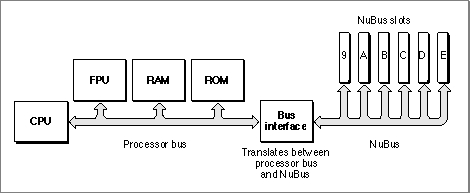
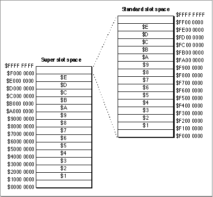
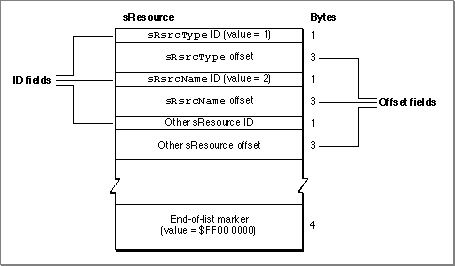
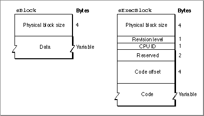
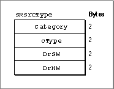
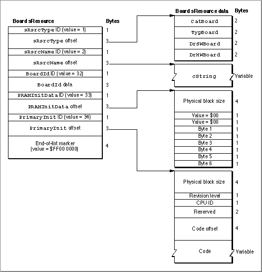
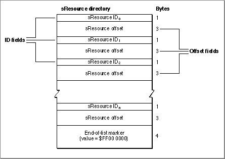
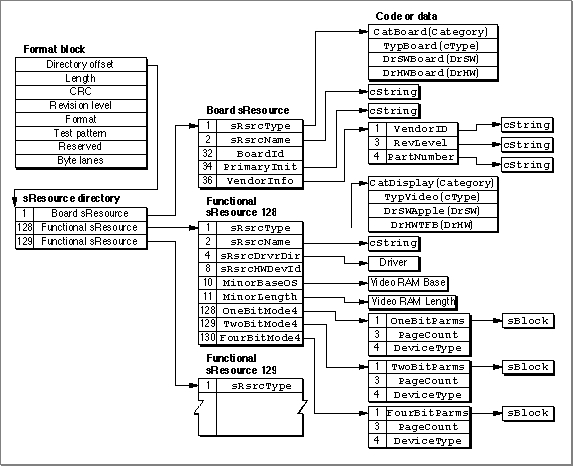

Introduction to Slots and Cards
The Macintosh Operating System provides a standardized interface to expansion cards through the Slot Manager. The Slot Manager supports two types of expansion cards: NuBus and processor-direct slot (PDS). Most Macintosh computers include one or both of these expansion systems. Although the discussion and examples in this chapter use NuBus, the information also applies to PDS expansion cards.Processor-direct slot expansion cards connect directly to the processor bus, giving them direct access to the microprocessor and therefore a speed advantage over NuBus cards. However, because the PDS expansion interface is an extension of the processor bus, the configuration of the slot depends on which microprocessor is used by the computer. Refer to Designing Cards and Drivers for the Macintosh Family, third edition, for information specific to PDS expansion cards.
Macintosh computers that include the NuBus expansion interface contain one or more identical NuBus slots. Each slot is identified by slot a number in the range $1 through $E. (Slot $0 corresponds to the main logic board, and slot $F is reserved for NuBus address translation.)
In Macintosh computers, the processor bus (which connects the microprocessor to RAM, ROM, and the FPU) and the NuBus (which connects the NuBus slots) are connected by a bus interface, as shown in Figure 2-1.
- Note
- For convenience, this chapter refers to a NuBus configuration with six slots numbered $9 through $E. Keep in mind that Macintosh computers may have more or fewer slots. Refer to the appropriate Macintosh Developer Note or Guide to the Macintosh Family Hardware, second edition, for information about specific models.
Figure 2-1 Simplified processor-bus and NuBus architecture

Both the processor bus and the NuBus are 4 bytes (32 bits) wide. The bus interface transfers data between the buses in byte lanes. A byte lane is any of the 4 bytes that make up the 32-bit bus. Because the processor bus and the NuBus interpret the significance of bytes within words differently, the bus interface must perform byte-lane swapping between the two buses.
The bus interface also performs some address translation between the two buses. It maps certain address ranges on each bus to different address ranges on the other bus. Designing Cards and Drivers for the Macintosh Family, third edition, discusses byte lanes and address translation in more detail.
The next section,"Slot Address Allocations," discusses the address ranges assigned by the Macintosh architecture to each NuBus slot.
The section "Firmware" on page 2-7 introduces the data structures that cards use to organize information in their firmware.
Slot Address Allocations
The Macintosh architecture assigns certain address ranges to each slot. The microprocessor communicates with an expansion card in a particular slot by reading or writing to memory in the slot's address range. Expansion cards can also communicate with each other in this manner.The NuBus architecture supports 32-bit addressing, providing 4 gigabytes of address space. All Macintosh computers that use Motorola 68030, 68040, or PowerPC processors support 32-bit addressing under System 7. Macintosh computers that use Motorola 68000 or 68020 processors, and those running System 6, use 24-bit addressing. This section describes address space allocation in both the 32-bit and 24-bit modes.
In 32-bit mode, the Macintosh architecture assigns two address ranges to each NuBus slot: a 256-megabyte super slot space and a 16-megabyte standard slot space.
The 4 gigabytes of 32-bit address space contain 16 regions of 256 megabytes apiece. Each region constitutes the super slot space for one possible slot ID. Each super slot space spans an address range of $s000 0000 through $sFFF FFFF, where s is a hexadecimal digit $1 through $E, corresponding to the slot ID. For example, the address range $9000 0000 through $9FFF FFFF constitutes the super slot space for slot $9.
The standard slot spaces are 16 megabytes apiece and have address ranges of the form $Fs00 0000 through $FsFF FFFF, where s is the slot ID. The standard slot space for slot $9, for example, is $F900 0000 through $F9FF FFFF. Figure 2-2 shows the super slot and standard slot subdivisions of the 32-bit address space.
In 24-bit mode, software can address only a fraction of each card's allocated address range. In this mode, the Operating System assigns each slot a 1-megabyte minor slot space. The bus interface translates 24-bit addresses on the processor bus with the form $sx xxxx (where s is a slot ID and x is any hexadecimal digit) into 32-bit NuBus addresses of the form $Fs0x xxxx, which is the first megabyte of the slot's standard slot space.
For example, 24-bit addresses in the range $90 0000 through $9F FFFF constitute the minor slot space corresponding to slot $9. The hardware translates these addresses into the NuBus address range $F900 0000 through $F90F FFFF.
Figure 2-2 The NuBus 32-bit address space

Table 2-1 shows the address allocations for each slot ID.
Firmware
The firmware of a NuBus expansion card contains information that identifies the card and its functions. Your application uses the Slot Manager to communicate with this firmware. This firmware, called the declaration ROM, may also include other information, such as initialization code or code for drivers that communicate with devices on the card. The sole purpose of many Slot Manager routines is to provide access to the information in the declaration ROM.This section discusses the data structures used to store information in the declaration ROM. You'll need to understand these structures in order to use the Slot Manager routines. To create firmware for an expansion card, you'll need to read Designing Cards and Drivers for the Macintosh Family, third edition.
The declaration ROM includes these elements:
The next few sections discuss these data structures in more detail.
- The sResources. An sResource is a data structure in the firmware of an expansion card's declaration ROM that defines a function or capability of the card. An sResource typically contains information about a single function or capability, although some sResources may contain other data--for example, device drivers, icons, fonts, code, or vendor-specific information.
- The sResource directory. The sResource directory is a special sResource that contains offsets to all of the other sResources in the declaration ROM.
- The format block. The format block is a data structure that allows the Slot Manager to find the declaration ROM and to validate it. It contains some identification information and an offset to the sResource directory.
The sResource
An sResource consists of a list of 4-byte entries. The first byte of each entry is an ID field that identifies the type of data contained in the entry. The next 3 bytes contain either data for the sResource or an offset to additional data such as icon definitions, code, or device drivers relating to the sResource.The last entry in an sResource must contain an end-of-list marker--a 4-byte series with the value $FF 00 00 00. Figure 2-3 shows the format of a typical sResource.
- Note
- An sResource is sometimes referred to as a slot resource. Note, however, that an sResource is a data structure in the firmware of a NuBus expansion card and not the type of Macintosh resource associated with the Resource Manager (which is described in Inside Macintosh: More Macintosh Toolbox).
Figure 2-3 The structure of a typical sResource

The ID field of each sResource entry indicates the type of information in the offset field of the entry. Apple reserves the range 0 through 127 for common sResource IDs. Designing Cards and Drivers for the Macintosh Family, third edition, includes a complete list of the Apple-defined sResource IDs and their meanings.
The offset field of each entry can contain a byte or word of data, or an offset to a larger block of data. This field takes one of three possible forms:
Table 2-2 lists the kinds of large data types commonly used in sResources.
- two $00 bytes followed by an 8-bit byte of data
- a single $00 byte followed by a 16-bit word of data
- a signed 24-bit offset to a larger data structure; the offset is relative to the address of the preceding ID field
Table 2-2 Large data types used in sResources Data type Description Long32 bits, signed or unsigned Pointer32 bits, signed or unsigned cStringOne-dimensional array of bytes, ending with 0 sBlockA sized block of data (see Figure 2-4) sExecBlockA sized block of code (see Figure 2-4) The
sBlockandsExecBlockdata structures begin with asizefield, which contains the physical size of the block (including thesizefield). In thesBlockstructure, thesizefield is followed by data. ThesExecBlockstructure includes additional fields and a code block. Figure 2-4 shows these structures.Figure 2-4 The format of the
sBlockandsExecBlockdata structures
Type and Name Entries
As shown in Figure 2-3, the Slot Manager requires that each sResource contain ansRsrcTypeentry, which identifies the sResource type, and ansRsrcNameentry, which provides the sResource name.The
sRsrcTypeentry contains an ID value of 1 and an offset to ansRsrcTypeentry. Figure 2-5 shows the format of ansRsrcTypeentry.Figure 2-5 The
sRsrcTypeentry format
sRsrcTypeentry are as follows:Every card has a unique
sRsrcTypeentry that must be assigned by Apple Computer, Inc. If you are developing a card, refer to Designing Cards and Drivers for the Macintosh Family, third edition, for information on obtaining ansRsrcTypeentry.The
sRsrcNameentry in an sResource contains an ID value of 2 and an offset to acStringdata structure containing the sResource name. By convention, thesRsrcNamefield is derived by stripping the prefixes from thesRsrcTypevalues and separating the fields by underscores. For example, thesRsrcNamefield for an sResource whosesRsrcTypevalues arecatDisplay,typeVideo,DrSwApple, andDrHwTFBbecomes'Display_Video_Apple_TFB'.Designing Cards and Drivers for the Macintosh Family, third edition, provides information about these and other sResource entry types.
The Board sResource and Functional sResources
Every card must have a single board sResource that contains information about the card as a whole. An sResource relating to a specific function is called a functional sResource, and a card may have as many of them as necessary. For example, a video card may have separate functional sResources for every pixel depth it supports. (See Figure 2-8 on page 2-14 for an example of a functional sResources for a video card, and see Designing Cards and Drivers for the Macintosh Family, third edition, for additional examples that include code listings.)The entries in the board sResource provide the Slot Manager with a card's identification number, vendor information, board flags, and initialization code. Like all sResources, the board sResource must include an
sRsrcTypeentry and ansRsrcNameentry. The boardsRsrcTypeentry must contain the constantsCatBoard($0001),TypBoard($0000),DrSWBoard($0000), andDrHWBoard($0000). ThesRsrcNameentry for the board sResource name does not follow the same convention as other sResources: thesRsrcNameentry for the board sResource contains the name of the entire card (for example,'Macintosh Display Card').The board sResource must also contain a
BoardIdentry, a word that contains the card design identification number assigned by Apple Computer, Inc. Designing Cards and Drivers for the Macintosh Family, third edition, describes other Apple-defined entries specifically for board sResources.Figure 2-6 shows a sample board sResource. It shows an
sRsrcTypeentry and ansRsrcNameentry and also includes three entry types,BoardID,PRAMInitData, andPrimaryInit, which are discussed in Designing Cards and Drivers for the Macintosh Family, third edition.Figure 2-6 A sample board sResource

The sResource Directory
The sResource directory lists all the sResources in the declaration ROM and provides an offset to each one. The sResource directory has the same structure as an sResource--that is, an sResource directory consists of a series of 4-byte entries, where the first byte is an ID field and the next 3 bytes contain an offset to additional data. Figure 2-7 shows the format of the sResource directory.Figure 2-7 The structure of the sResource directory

The sResource ID field of an entry in the sResource directory always identifies an sResource on the card. Each sResource in the card firmware requires a unique ID defined by the card designer, and the ID must be in the range 1 through 254. For example, an entry for the board sResource must appear first in a card's sResource directory, so card designers typically assign an sResource ID value of 1 to the board sResource. The sResource ID numbers must appear in the sResource directory in ascending order. An sResource directory must conclude with the end-of-list marker ($FF 00 00 00).
The offset field of each entry contains a signed 24-bit offset to the sResource corresponding to the sResource ID field. The offset value counts only those bytes accessible by valid byte lanes, and is relative to the address of the sResource ID field.
The Format Block
The format block always resides at the highest address in the standard slot space of a declaration ROM. At startup, the Slot Manager locates installed cards by searching each slot space for a valid format block. The format block contains information about the declaration ROM and an offset to the sResource directory. The Slot Manager uses the format block to validate the declaration ROM and locate the sResources.The format block also contains a value that specifies which of the four byte lanes are occupied by the declaration ROM. These byte lanes are called the valid byte lanes. Some declaration ROMs do not appear on all four byte lanes, so software cannot read meaningful data at every memory location in the address space for the byte lanes.
Designing Cards and Drivers for the Macintosh Family, third edition, defines the structure of the format block and gives examples of how the valid byte lanes affect communication with a declaration ROM.
- IMPORTANT
- The format block defines which byte lanes are valid for the declaration ROM only. The valid byte lanes are determined by card design, and may be different for other memory-mapped devices on the card.

Figure 2-8 illustrates the relationship of the format block, the sResource directory, and the sResources for a sample video card. For every entry in the sResource directory and in the sResources, its ID number is shown on the left side of the entry. As shown in this figure, the board sResource is the first sResource listed in the sResource directory. Each functional sResource that follows in turns defines a display capability provided by the card. (To simplify this figure, only one complete functional sResource is shown.)
Figure 2-8 The format block and sResources for a sample video card

Subtopics
- Slot Address Allocations
- Firmware
- The sResource
- Type and Name Entries
- The Board sResource and Functional sResources
- The sResource Directory
- The Format Block